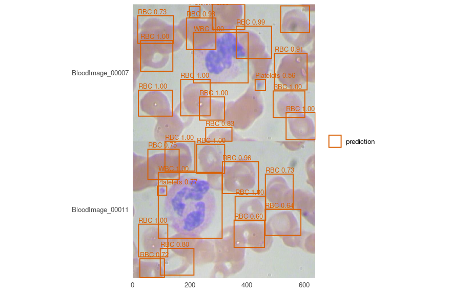
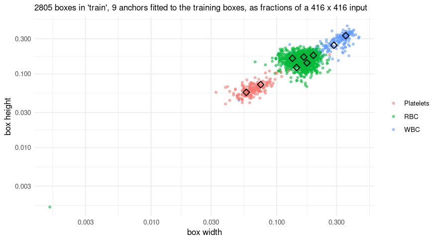
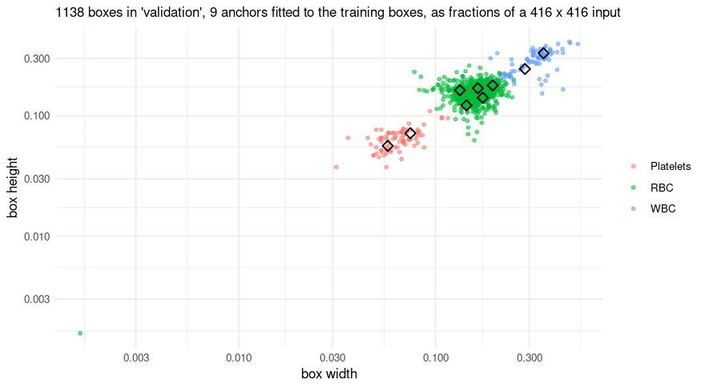

Segmentation asks which pixels are tissue. Detection asks how many objects there are and where, which is a different question and needs a different answer: boxes, not masks.
BCCD is 364 photographs of blood smears with 4,888 boxes in three classes - red cells, white cells, platelets - and its own train/validation/test split. It is small, it is MIT-licensed, and its classes are wildly unbalanced, which turns out to be the most instructive thing about it.
Every number and every picture below was produced by running the code shown.
Before any of that: boxes in a few lines
A detector trained on this data is published, so the shortest way to see whether this works is to borrow it. No training, no GPU, no waiting.
A detection dataset arrives in Pascal VOC’s layout - one flat directory of images beside one flat directory of XML - which is neither of the two layouts the package reads. Turning it into one is the only data wrangling here, and it is a dozen lines:
voc_split <- function(root, listed) {
names <- readLines(file.path(root, "ImageSets", "Main", paste0(listed, ".txt")))
names <- names[nzchar(names)]
frame <- data.frame(
key = names,
images = file.path(root, "JPEGImages", paste0(names, ".jpg")),
# `annotations`, not `masks`: a detection specification looks for that column, because
# what labels an image here is an annotation file and not a picture.
annotations = file.path(root, "Annotations", paste0(names, ".xml"))
)
path <- file.path(tempdir(), paste0("bccd-", listed, ".csv"))
write.csv(frame, path, row.names = FALSE)
path
}
splits <- vapply(c("train", "val", "test"), function(s) voc_split(data_dir, s),
character(1))
vapply(splits, function(p) nrow(read.csv(p)), integer(1))
#> train val test
#> 205 87 72BCCD’s own split, not one invented here - which is the only reason the numbers below can be compared with anybody else’s on this dataset.
cells <- c("RBC", "WBC", "Platelets")
published <- platypus_spec(
data = detection_data(splits[["train"]], splits[["val"]], test = splits[["test"]],
classes = cells, mode = "config_file"),
models = list(yolo3("cells", input_shape = c(416, 416),
weights = "bccd-yolo3", fit = FALSE))
)
#> Warning: Some Python package requirements declared via `py_require()` are not installed in the selected Python environment: (/home/maju116/.cache/uv/archive-v0/wjRRjivfnRhbB-9U8b51r/bin/python)
#>
borrowed <- platypus_fit(published, verbose = FALSE)
found <- predict(borrowed, split = "test")
length(found)
#> [1] 72
head(found[[1]], 4)
#> xmin ymin xmax ymax score label name
#> 1 19.93539 300.9871 139.2865 392.0793 0.9999792 1 RBC
#> 2 27.77121 126.9517 140.5794 234.9014 0.9999719 1 RBC
#> 3 492.09385 303.5892 603.1343 396.8544 0.9999502 1 RBC
#> 4 213.10871 99.1100 404.4725 275.4815 0.9996140 2 WBCOne data frame per image, named by the sample key, in the photograph’s own pixels - so the boxes land on the picture without anything being undone first:
names(found)[1:2]
#> [1] "BloodImage_00007" "BloodImage_00011"
files <- read.csv(splits[["test"]])
images <- read_images(files$images[1:2], size = NULL)
plot_boxes(images, found[1:2], min_score = 0.5)
And here, unlike the nuclei vignette, a score means something
Those weights were trained on BCCD’s 205 training images. This is its 72 test images, which the model has never seen, so measuring on them is honest:
evaluate(borrowed, split = "test")[, c("map_50", "map_50_95", "mean_matched_iou")]
#> map_50 map_50_95 mean_matched_iou
#> 1 0.8570754 0.5003368 0.8058061That is the figure on the model card, which anybody can check:
available_weights()[available_weights()$name == "bccd-yolo3", c("name", "revision")]
#> name revision
#> 1 bccd-yolo3 24fbff0833455a747c7bac9c2b8dc43073ce4e82The description in that table is the part to read before trusting them. Published is the median of five seeds rather than the best - the spread is wide enough that a single number would be whichever seed was reported - and platelets are the unreliable class, which the next section shows rather than asserts.
One refusal worth meeting now
A detector’s weights decode boxes relative to the anchors they were trained with. Read with any others, the same numbers produce boxes scaled by a fixed factor: plausible boxes, plausible scores, wrong places, and nothing in any output to say so. So loading takes the anchors recorded beside the file, and a specification that also names some is two claims about one model with one of them untrue:
yolo3("cells", input_shape = c(416, 416), weights = "bccd-yolo3",
anchors = list(list(c(0.3, 0.3)), list(c(0.2, 0.2)), list(c(0.1, 0.1))))
#> Error:
#> ! give `weights` or `anchors`, not both. A detector's weights decode boxes relative to the anchors they were trained with, so loading uses the ones recorded beside the file - which would leave these describing nothing.Refused before anything was built. Everything below trains from scratch instead, which is what you will do on your own data.
Anchors, which a detector has and a U-Net does not
YOLOv3 does not predict a box from nothing. It predicts a correction to one of nine anchors - fixed shapes, three per grid - and which anchors you use decides how much correcting is left to learn. Unset, they are fitted to your own boxes:
spec <- platypus_spec(
data = detection_data(splits[["train"]], splits[["val"]], test = splits[["test"]],
classes = cells, mode = "config_file"),
models = list(yolo3(
"cells",
input_shape = c(416, 416),
epochs = 150,
batch_size = 8,
optimizer = optimizer_adam(learning_rate = 1e-4),
# A smear has no up or down, and a left-right flip is free: the boxes follow it
# exactly, with no interpolation and no rounding.
augmentation = list(augment("HorizontalFlip", p = 0.5)),
callbacks = list(callback_cosine_annealing())
)),
seed = 1
)
fit <- platypus_fit(spec, verbose = FALSE)
anchors <- detection_anchors(fit)
anchors$fitted
#> [1] TRUE
round(anchors$mean_iou, 4)
#> [1] 0.8772
anchors$per_anchor[, c("grid", "slot", "width_pixels", "height_pixels", "boxes",
"mean_iou")]
#> grid slot width_pixels height_pixels boxes mean_iou
#> 1 0 0 147.38592 137.40874 103 0.8696796
#> 2 0 1 118.59296 101.74789 71 0.8102370
#> 3 0 2 81.30258 74.30011 445 0.8863117
#> 4 1 0 68.32447 70.38699 803 0.9089707
#> 5 1 1 72.38382 58.75508 581 0.8836537
#> 6 1 2 55.40458 67.64656 349 0.8541086
#> 7 2 0 59.82368 50.76842 247 0.8363835
#> 8 2 1 30.99390 29.78902 82 0.8265114
#> 9 2 2 23.79106 23.37358 123 0.8322202Fitted anchors cover these boxes at a mean overlap of 0.88. COCO’s own nine, borrowed, manage 0.65 on the same boxes - which is the difference between a correction and a rewrite, and it costs nothing to avoid.
A mean hides which class it is made of. A coverage of 0.65 is either “every class covered adequately” or “two covered well and the third not at all”, and those want different fixes. The picture tells them apart:
plot_anchors(fit, log = TRUE)
Each point is one annotated box - its width against its height, both as fractions of the 416 x 416 input - and the diamonds are the anchors. Log axes, because the fitted anchors alone run from 24 to 147 pixels a side, and on linear ones the smallest class collapses into the corner.
Three clouds, because the three cell types are three sizes, and a diamond near each one. The diamonds are not spread evenly: most sit in the crowded middle where the red cells are, which is k-means doing exactly what it was asked - put the anchors where the boxes are, not where the classes are.
And one point sits far below everything else, at about two thirds of a pixel a side. That is not a drawing error and not an outlier in the statistical sense - it is a bad row. BCCD carries one annotation of zero extent in the training split and another in the validation split, and a zero-width box read under Pascal VOC’s inclusive convention comes out one pixel across. k-means drops it, because an overlap with a box that has no area is undefined, which is why the anchors above were fitted to 2,804 boxes while the picture draws 2,805. The plot keeps it deliberately: a dataset’s bad rows are worth seeing once, and this is the only place in the whole run where that one is visible at all.
It is also the clearest way to see why COCO’s nine manage only 0.65 here. Those span 10 to 373 pixels a side, because COCO holds objects of every size; these three cell types span about 6-fold. Most of that range is spent on boxes this dataset does not contain.
Worth drawing for the split they were not fitted on. Anchors covering the training boxes well and the validation boxes badly would say the two halves hold different objects, and no training curve shows that:
plot_anchors(fit, split = "validation", log = TRUE)
What the loss is doing
tail(fit$history[, c("epoch", "train_loss", "train_coordinates", "train_objectness",
"val_loss")], 3)
#> epoch train_loss train_coordinates train_objectness val_loss
#> 148 148 5.922305 5.918050 0.0006400742 9.771855
#> 149 149 5.925872 5.921553 0.0006455596 9.768552
#> 150 150 5.946499 5.942215 0.0006420772 9.850832The total does not reach zero and that is not a
stall. Cross-entropy against a soft target bottoms out at the
target’s own entropy, so the coordinate term has a floor above zero that
depends on the data. Which is exactly why the four parts are reported
separately: a total of 5.95 means nothing alone, while
coordinates 5.94 beside
objectness 6.4 × 10<sup>-4</sup> says
the model has learned what is where and is still refining the boxes.
Scoring, and the number that is missing on purpose
evaluate(fit, split = "test")
#> model architecture parameters epochs_run map_50 map_50_95 mean_matched_iou
#> 1 cells yolo3 61534504 150 0.8661176 0.513187 0.8064532
#> n_truth n_predicted classes_without_truth
#> 1 945 2817 0This run’s map_50 of 0.8661 sits inside the
range of the five in the table further down (0.853 to 0.887), and that
is the point of the table rather than a problem with it. A seed
pins which random numbers are drawn; it does not pin the order they are
consumed in, and the number of loader workers -
num_workers = "auto" here, four in the script that produced
the published weights - changes that order. So “the same seed” means the
same recipe on one machine with one worker count, and not a guarantee of
the same number. Knits of this very document at the same seed have
differed by more than a point of map_50, which is how the
paragraph you are reading came to be written: the first version of it
quoted a number, and the next knit disagreed with it.
Which is the argument for reading mean_matched_iou
first, and it holds here: the overlap came out at 0.8065 against the
five-run mean of 0.8040, a difference of 0.0024.
There is no overall precision and no overall recall in that table, and the absence is deliberate. Averaging them over classes needs a weighting, and every choice of weighting is a different claim: over BCCD’s 4,155 red cells, 372 white and 361 platelets, a single precision is a statement about red cells wearing the costume of a statement about the model.
Per class is the form in which they mean something:
evaluate_classes(fit, split = "test")
#> class average_precision mean_matched_iou n_truth n_predicted precision
#> 1 RBC 0.7971192 0.8089451 805 904 0.7168142
#> 2 WBC 0.9634323 0.8523577 71 77 0.9220779
#> 3 Platelets 0.8378013 0.7311496 69 111 0.5855856
#> recall
#> 1 0.8049689
#> 2 1.0000000
#> 3 0.9420290Read that table rather than the mean. White cells are nearly perfect - there is one per image and it is large. Platelets come back at a precision of 0.59 at this confidence, meaning 41% of the platelets reported are not there, and their boxes fit worst of the three at an overlap of 0.73.
mAP@0.5, mAP@[.50:.95], and which to believe
Two averages and they answer different questions. The first asks
whether an object was found; the second averages over ten overlap
thresholds and so also asks how well the box fits. The gap between them
is localisation, and mean_matched_iou says that in one
number instead of through a difference.
On this dataset, the overlap is far steadier than the average precision. Five runs of the recipe above, differing only in the seed - and measured with the engine on its own, four loader workers, rather than through this vignette:
| mean | sd | |
|---|---|---|
| mAP@0.5 | 0.8660 | 0.0159 |
| mAP@[.50:.95] | 0.5159 | 0.0199 |
| mean IoU of matched boxes | 0.8041 | 0.0026 |
Six times steadier. Which rank the model gives a borderline platelet
moves average precision and leaves the overlap alone - so on a dataset
this size, a point of mAP is not a result, and
mean_matched_iou is the number to read first. That is not a
general law about detection; it is what these 364 images do, and it was
found by running five seeds rather than one.
Looking at it
The comparison is the point. Truth in one colour, predictions in another, on the same image:
truth <- lapply(read.csv(splits[["test"]])$annotations[1:2], function(path) {
xml <- readLines(path, warn = FALSE)
nodes <- regmatches(paste(xml, collapse = ""),
gregexpr("<object>.*?</object>", paste(xml, collapse = "")))[[1]]
pull <- function(node, tag) {
as.numeric(sub(paste0(".*<", tag, ">([^<]*)</", tag, ">.*"), "\\1", node))
}
data.frame(
# Pascal VOC is 1-based and inclusive of both ends, so a box written xmin=1 xmax=10 is
# 0..10 as a continuous interval. Reading it as 0-based shifts every box by a pixel and
# shrinks it by one - invisible by eye, and real IoU on a platelet 41 pixels across.
xmin = vapply(nodes, pull, numeric(1), "xmin") - 1,
ymin = vapply(nodes, pull, numeric(1), "ymin") - 1,
xmax = vapply(nodes, pull, numeric(1), "xmax"),
ymax = vapply(nodes, pull, numeric(1), "ymax"),
name = sub(".*<name>([^<]*)</name>.*", "\\1", nodes)
)
})
mine <- predict(fit, split = "test")
plot_boxes(images, mine[1:2], truth = truth, min_score = 0.5)
A detector that found the right number of objects in the wrong places and one that found the wrong number in the right places score similarly and look nothing alike, which is why this picture is worth more than either average.
What this does not do
It is not a cell count. A precision of 0.59 on platelets means a count taken from these boxes is too high by about 71%. Counting needs either a better model for the small class or a threshold chosen for counting rather than for a figure, and either way it needs measuring against truth on your own data.
It is one small collection. 205 training images at one magnification, stained one way. BCCD is a demonstration dataset.
It is not a diagnostic tool, and a result from it is not a laboratory result.
Notes on the machine
Trained on a GTX 1070: 150 epochs, about 37 minutes. YOLOv3 is 61.5 million parameters, thirty times a U-Net at the settings in the nuclei vignette, so this is the one place in the package where the hardware matters.
A card of that generation needs the CUDA 12 build of PyTorch, which
platypus_use_torch("pascal") selects - see
?platypus_device. Without it the run falls back to the
processor, and the warning that says so is printed before the wait
rather than after, because a run that quietly went to the CPU looks
exactly like a run that is simply slow.